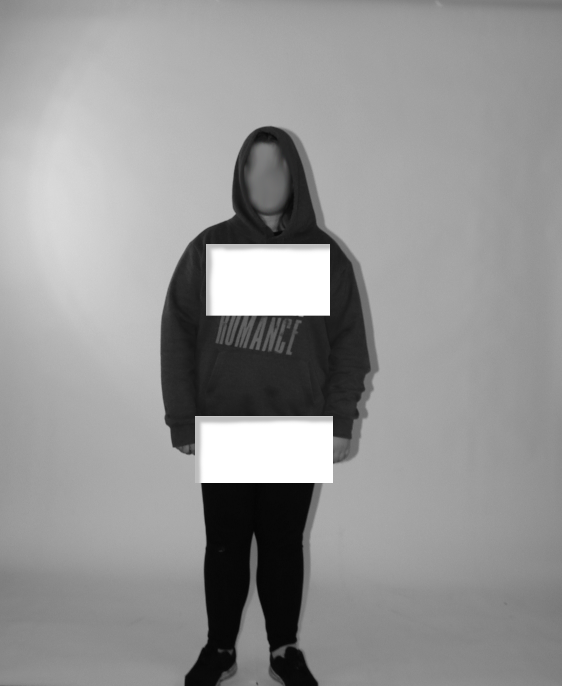

Redacted

In this image i tried to capture one of my brain's subconcious coping mechanisms to deal with the knowledge
that it was in a body it did not recognise as its own. Before i was on HRT my body would make it so i couldnt
feel my hips or chest, as in as far as my brain was reporting they didnt exist unless i was looking at them.
My brain also tried to rid itself of any knowledge of what my face looked as soon as i stopped looking at it
in say a photograph or a mirror.